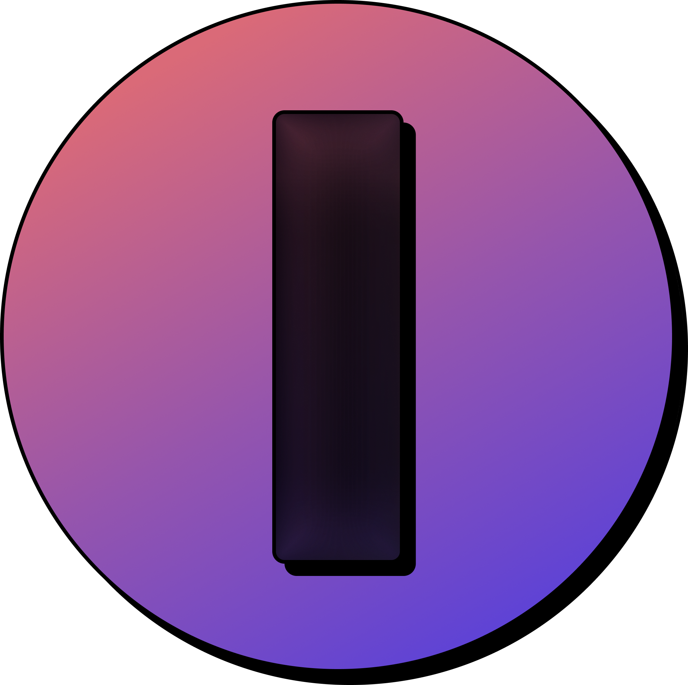

Imitate Labs is an AI-powered editing tool that replicates your style or any YouTuber’s.
Just drop your footage or type a channel name. It edits, titles, thumbnails, and writes descriptions
like they would.
The ultimate shortcut for creators.
Fast, personalized, and insanely smart.